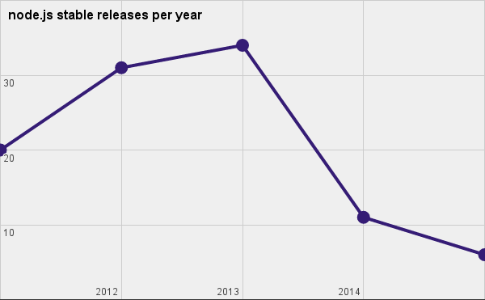
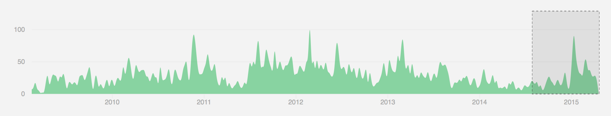
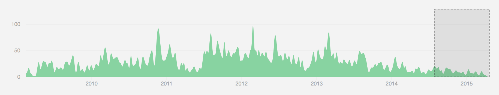

first there was node.js
- released in 2009
- cross platform runtime
- gave us JavaScript everywhere
- governed by Joyent
- led by Benevolent Dictator (for life-ish)
node.js was progressing slowly
“Slow to create new releases, slow to accept PRs, slow to accept community members’ recommendations for new features”

node forward started
“Node Forward is anyone who wants to take responsibility for a problem and work together to fix it.”
sometime around August 2014
private node.js fork turned into io.js
“A friendly fork of Node.js with an open governance model”
- public on Thanksgiving weekend 2014
- uses open governance model
- very easy for us to contribute to io.js projects
the technical committee
has final authority over io.js including
- Technical direction
- Project governance and process
- Contribution policy
- GitHub repository hosting
- Conduct guidelines
- Maintaining the list of additional Collaborators
core team behind io.js
- Isaac Z. Schlueter (TC)
- Fedor Indutny (TC)
- Rod Vagg (TC)
- Ben Noordhuis (TC)
- Bert Belder (TC)
- Trevor Norris (TC)
- Chris Dickinson (TC)
- Jeremiah Senkpiel (TC)
- and 21 other non-TC contributors
io.js impact on you
- faster and predictable release cycles
- rapid updates to dependencies (V8 and libuv)
- ES6: let, const, collections, generators, symbols, promises, template strings and new string methods
- Streams 3: API slightly less surprising for humans and faster for computers
- a lot of other stuff that you can see in changelogs
io.js impact on your computer
- works with npm
- because the path to the node binary is a major dependency, iojs redirects that path to it's own path
- I prefer to use nvm to manage io.js and node.js installs
did node.js close the gap on io.js
|
version |
V8 |
libuv |
ES6 |
governance |
| node.js |
v0.12.2 |
3.28.73 |
1.4.2-node1 |
23% |
corporate |
| io.js |
v1.8.1 |
4.1.0.27 |
1.4.2 |
41% |
open |
io.js has gained a lot of momentum
about one release every 6 days
io.js core contributions

node.js core contributions

reconciliation
There are now plans to bring io.js and node.js back together. A lot of work needs to be done to merge the governance model, code and release process. Maybe within six months or less. It's all kinda boring to listen too...zzzzzz
participation
go to the io.js org site and see if there are any discussions or issues you feel like you could
participate in. At least download io.js and make sure any code you wrote works with it.
is io.js hipster enough?
not anymore :(